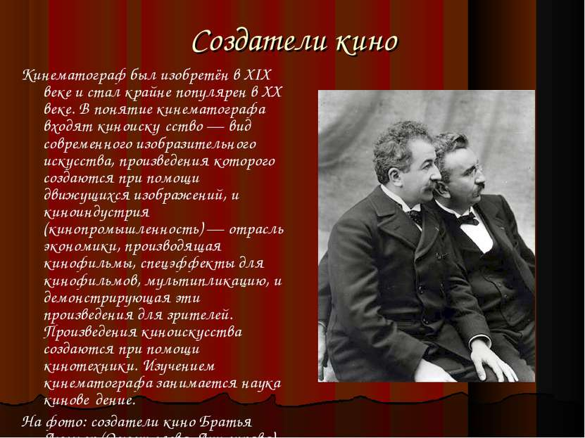
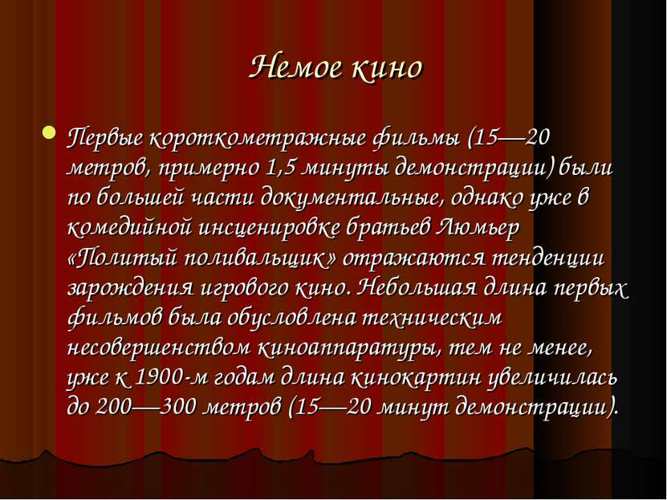
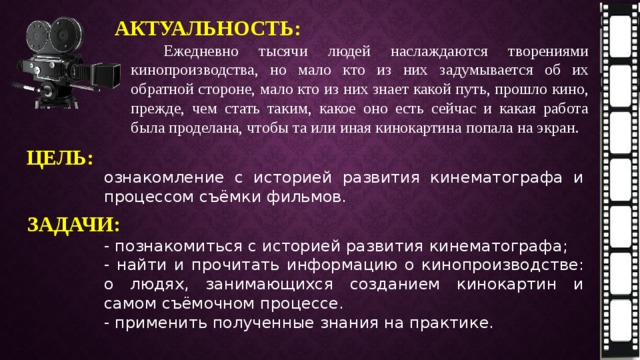
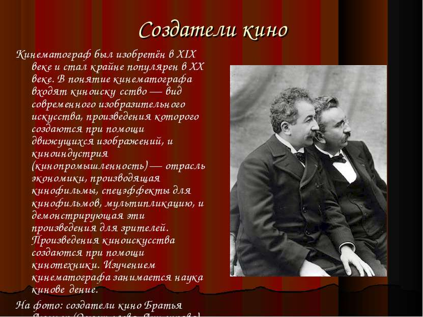
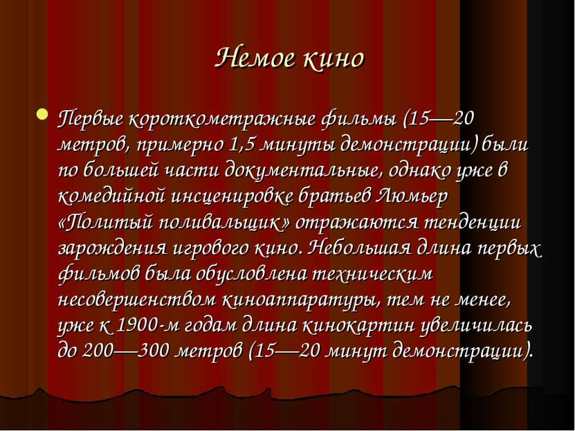
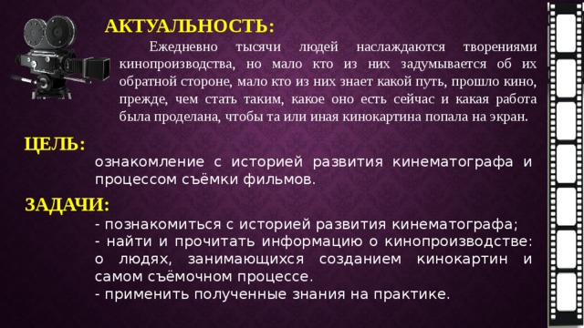
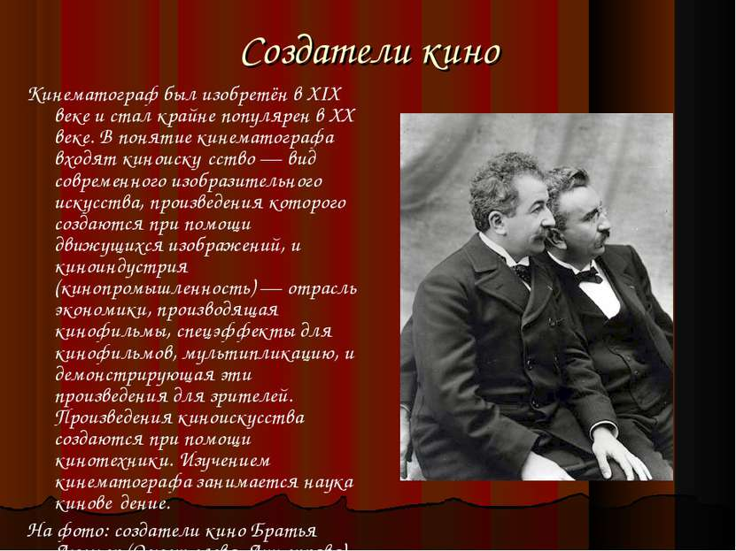
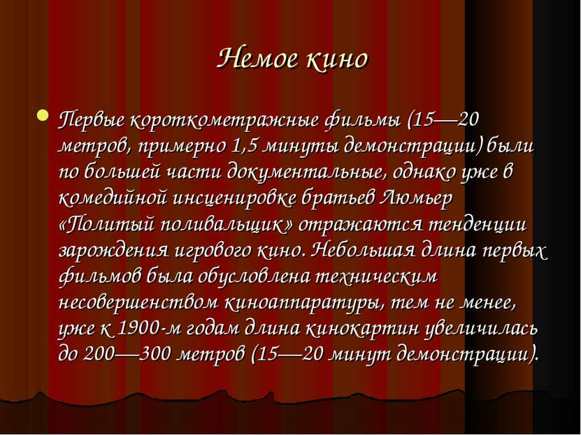
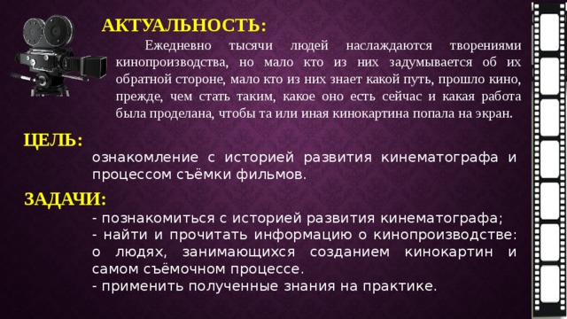

Старое кино
Рождение кинематографа
Первым описанием плоских движущихся изображений принято считать рассказ о тенях, «отбрасываемых огнем … на стену пещеры» в начале седьмой книги платоновского Государства. Описания, предвосхищающие кино, также иногда находят у Герона Александрийского и Клавдия Птолемея.
Однако если говорить не о сходстве разного рода метафор со знакомым нам явлением, а о реальной системе, позволяющей записывать и воспроизводить бесконечное разнообразие движущихся плоских изображений, то непосредственными предшественниками кинематографа были, во-первых, различные игрушки с сериями картинок, которые при быстрой их смене воспринимались как одно движущееся изображение (среди таких игрушек надо отметить т.н. «чудо-блокнот», «зоотроп» и «фенакистоскоп») – все эти системы позволяли воспроизводить не более нескольких секунд движения. А во-вторых, предшественником кино как системы был волшебный фонарь (также laterna magica – нечто вроде современного диапроектора), который в середине 19 в. часто снабжался приспособлениями, позволяющими имитировать некоторые виды движения.
Но создание кинематографа как системы воспроизведения достаточно длительного движущегося изображения, причем изображения совершенно произвольного (в том числе и полностью жизнеподобного) оказалось возможным только после того, как возникла фотография, а чувствительность фотоматериалов стала позволять снимать при коротких выдержках. Когда – с изобретением в конце 1870-х бромсеребряных желатиновых эмульсий, являющихся основой фото- и кинопроцессов по сей день – это произошло, практически сразу же стали разрабатываться различные системы записи движения.
В истории сохранились имена десятков изобретателей такого рода систем, работавших в самых разных странах (наиболее известны среди них англичанин Эдвард Майбридж и француз Этьен-Жюль Марей), но в большинстве случаев эти изобретения из-за финансовых или технических проблем не были доведены до конца. А те, которые были закончены, или создавали неудовлетворительные условия для восприятия – как системы Марея и Майбриджа, – или были резко ограничены в разнообразии типов возможных изображений – как, например, система француза Эмиля Рено, которая не использовала фотографию.
Первой успешной кинематографической системой были изобретенные Томасом Эдисоном и его инженером Уильямом Диксоном два приспособления – «кинетограф» («записывающий движение», снимающее устройство), а другое – «кинетоскоп» («показывающий движение», воспроизводящее устройство). Эта система была разработана в конце 1880-х – в начале 1890-х, патентная заявка на нее была подана в 1891, патент выдан 14 марта 1893, а первый коммерческий сеанс состоялся 14 апреля 1894. В силу этого Эдисона и Диксона можно было бы считать изобретателями кино (и так иногда и делают), но кинетоскоп был рассчитан только на индивидуальный просмотр, что, очевидно, не позволило тогдашней публике разглядеть в нем нечто большее, чем простой аттракцион. Из-за этого получившие первоначально довольно широкую популярность кинетоскопы через несколько лет вышли из употребления, оставшись в действии только в пип-шоу.
Поэтому изобретателями кинематографа признаны братья Луи и Огюст Люмьеры, которые были знакомы с конструкцией эдисоновской техники и, благодаря тому, что Эдисон не стал патентовать свое изобретение в Европе, смогли воспользоваться некоторыми его идеями. Их аппарат «синематограф» и дал название кинематографу. Люмьеры подали патентную заявку 13 февраля 1895, а первый публичный просмотр состоялся в Париже 22 марта 1895. Любую из этих дат (равно как и любую из перечисленных выше дат, относящихся к эдисоновскому изобретению) можно считать днем рождения кино, но официальным днем рождения признается 28 декабря 1895, когда был дан первый коммерческий сеанс синематографа в подвале «Гран кафе» на бульваре Капуцинов.
Люмьеровские сеансы состояли обычно из примерно десятка пятидесятисекундных лент. Как правило, показ начинался первым снятым ими фильмом Выход рабочих с фабрики Люмьер (La Sortie des usines Lumière, 1895), затем демонстрировались различные ролики, в которых обязательно имели место разнообразные виды движения (например, море, работающие кузнецы, гимнаст, завтрак ребенка, просто уличные сценки, разрушение стены – последний сюжет часто затем показывался в обратной проекции, и стена восстанавливалась). Но наибольшую популярность имели два ролика, которым Люмьеры в конечном счете и обязаны признанием в качестве родителей кино, – это Прибытие поезда на вокзал Ля Сьота (L"Arrivée d"un train en gare de la Ciotat, также Прибытие поезда, 1895) и Политый поливальщик (L"Arroseur Arrosé, 1895). В первом из этих фильмов поезд, подъезжающий к станции по диагонали кадра, так быстро и заметно увеличивался в размерах, что многие зрители в испуге вскакивали с мест: настолько был сильным эффект движения как бы из глубины плоской картинки – эффект, никогда ранее не встречавшийся в изобразительных искусствах. Именно этот фильм быстро принес популярность новому зрелищу, из-за чего его иногда ошибочно считают вообще первым в истории кино.
Голливуд, «Ленфильм» и «Мосфильм»: развитие кино как индустрии
До 1910-х Голливуд был поселком в пригороде Лос-Анджелеса. В 1911 году компания «Кентавр» из Нью-Джерси арендовала заброшенную придорожную закусочную, которую обустроили под киностудию и дали название «Студия Нестор». Это здание впоследствии стало «Кинолабораторией Голливуда».
Через три года – в 1914-м – тут был снят полнометражный художественный фильм «Муж индианки». Создателями выступили Сесил Б. ДеМилль и Оскар Апфель. Голливуд стал набирать обороты как центр кинопроизводства. В 1958 году появилась знаменитая Аллея Славы.
В СССР кинематограф развивался своим путем. Одной из старейших советских киностудий считается «Ленфильм» – в 1914 году она возникла как Военно-кинематографический отдел Скобелевского комитета (благотворительное учреждение для выдачи пособий больным и раненым воинам).
В 1923 году объединились два ведущих киноателье – Ханжонкова и Ермольева. В 1924-м вышел их первый совместный фильм – «На крыльях ввысь» Бориса Михина. Это считается началом работы киностудии «Мосфильм».
Как целая индустрия кино начинает развиваться в 1920-х. Тогда появляются и первые продюсеры (а не только режиссеры). В это время успехом пользуются комедии – в том числе немые фильмы с Чарли Чаплином в главной роли. В Европе экспериментируют с жанрами – немецкий экспрессионизм и французский авангард. В Германии снимают фантастический «Метрополис» и хоррор-триллер «Кабинет доктора Калигари», а во Франции ужастик «Андалузский пес» и биографическую драму «Страсти Жанны Д'Арк».
Свои ленты создают и в Советском Союзе. Это начало режиссерской карьеры Сергея Эйзенштейна – культовой фигуры в истории кино. Он изучал монтаж и внедрял новые приемы монтажа и съемки. В 1925 году вышел на экраны «Броненосец «Потемкин» Эйзенштейна. В то же время работает и Всеволод Пудовкин – кроме практической деятельности, он занимался теорией кино. В дальнейшем его труды стали учебными пособиями для кинематографистов. В 1926 году мир увидел фильм «Мать», снятый по роману Максима Горького. Спустя год ленту показали в Париже.
Одним из основателей советской школы кино, который стоит наравне с Эйзенштейном, считается Лев Кулешов – в 1929 году была опубликована его книга «Искусство кино». В ней был, например, описан «эффект Кулешова» – монтажный прием, который заключается в сопоставлении двух кадров.
Начинаются 1930-е. Появляется цветное кино. В Голливуде господствуют шесть киностудий: Metro-Goldwyn-Mayer (MGM), Paramount Pictures, Warner Brothers, 20th Century Fox, Universal Pictures и RKO Pictures. Давайте по порядку.
MGM – это такие фильмы, как «Гранд-отель» (получивший «Оскар»), «Волшебник страны Оз», «Унесенные ветром». Paramount Pictures снял «Шанхайский экспресс», «Знак креста» и «Марокко». WB – «Враг общества», «Парад в огнях рампы» и гангстерские картины. 20th Century Fox сначала выпускала доброе семейное кино, затем и серьезные драматические ленты – «Как зелена была моя долина», «Все о Еве» и детектив «Джентльменское соглашение». В то время Universal занималась хоррорами – «Дракула», «Франкенштейн», «Человек-невидимка», «Лондонский оборотень» (получается, что большинство «классических» монстров в кино нам подарила именно Universal Pictures еще в XX веке). RKO Pictures мы знаем благодаря комедии «Воспитание крошки» и фильмам «Кинг-Конг» и «Гражданин Кейн».
В СССР в этот период выходит «Гибель сенсации» Александра Андриевского – одна из первых советских антиутопий о том, как роботы, призванные помогать человеку трудиться, вытеснили людей. Пудовкин продолжает снимать на «Мосфильме».
В послевоенные годы появляется так называемое независимое кино – небольшие студии, которые пытаются соревноваться с Голливудом и создавать собственные направления в искусстве (пример – итальянский неореализм). В Голливуде же блистает Мэрилин Монро – «Ниагара», «Джентльмены предпочитают блондинок» и «Как выйти замуж за миллионера».
В 1950-х продвигается новый – широкий – формат CinemaScope. А в конце 1970-х кинематограф создает удивительную фантастическую историю «Звездные войны» – воплощение смелой идеи молодого режиссера Джорджа Лукаса.
Культовые режиссеры
Вернее, наша выборка некоторых ключевых фигур в киноиндустрии. На самом деле, значимых персон в кинематографе гораздо (гораздо!) больше.
Андрей Тарковский
1960–1970-Е ГОДЫ
Этот советский режиссер решил поступать во ВГИК после знакомства со студентом мастерской Льва Кулешова. Кроме того, он вдохновлялся творчеством итальянского режиссера Федерико Феллини. Первой лентой Тарковского, снятой по рассказу Эрнеста Хемингуэя совместно с однокурсницей, стали короткометражные «Убийцы». После окончания ВГИКа он пошел работать на «Мосфильм» – и весьма успешно. Ему доверили съемки «Иванова детства» по произведению Владимира Богомолова. В этом фильме режиссер чередовал сон и реальность, чтобы разделить и противопоставить детство главного героя и военные годы. Вклад Тарковского в кино – это фильмы «Андрей Рублев» про выдающегося иконописца XV века, психологические драмы «Солярис», «Сталкер» и
 







